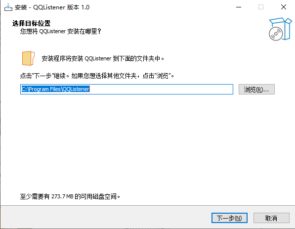
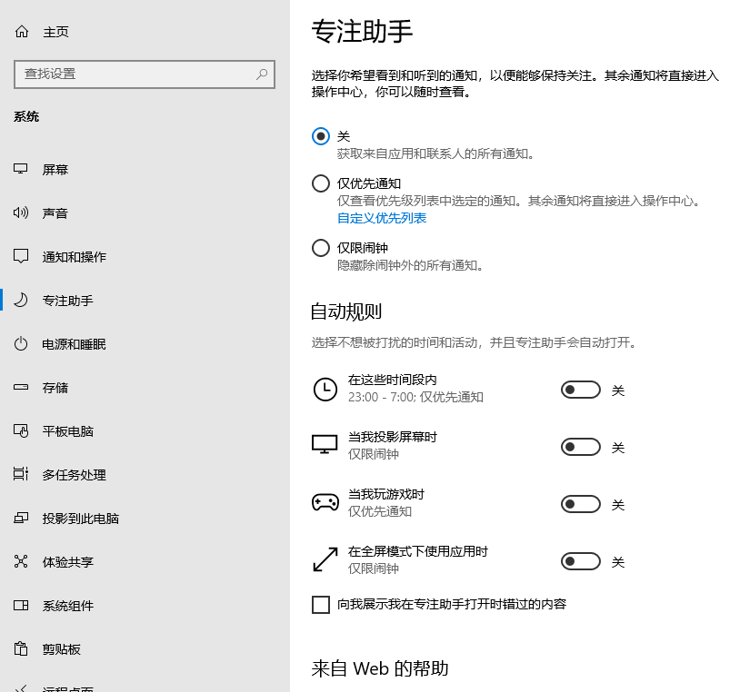
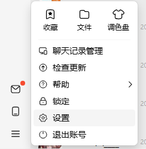
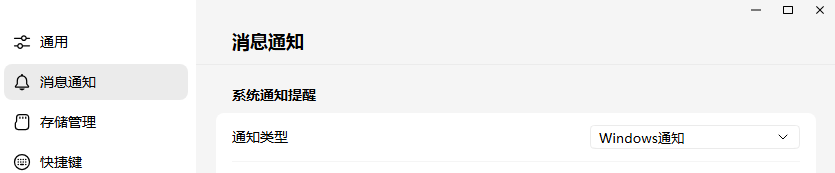
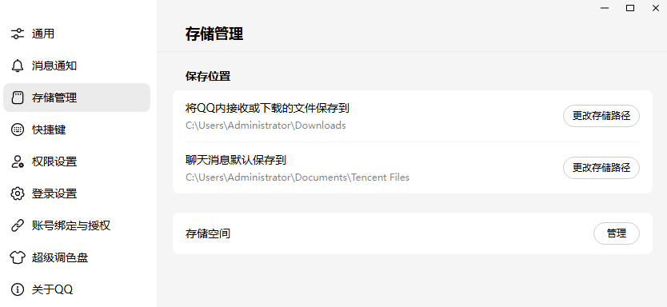
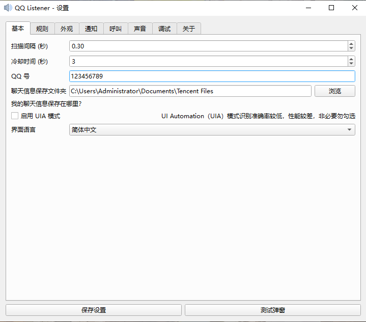

详细工作原理
QQListener 灵活支持多种环境，确保消息抓取的稳定性：
- WinSDK 模式： 通过监听 Windows 通知中心（Toast）实现。功耗极低，几乎不占资源，支持智能信息筛选，强烈推荐。
- UIA 模式： 备选方案。通过 UI 自动化技术直接从窗口元素中“扒”消息。
快速上手指南
-
版本限制：
必须使用 NT QQ。老版 QQ 不发 Windows 通知。系统要求 Win10 1903+。
下载新版 QQ
-
安装软件：
一路无脑下一步即可，建议加入开机自启。

-
权限申请：
打开 Windows 设置 -> 系统，关闭专注模式，并禁用自动启用专注模式。

此外，还需要允许 QQ 发送通知：


-
基础配置：
在设置里找到聊天记录保存位置，同步填入 QQListener 的保存目录。

顺便把你的 QQ 号填一下：

常见问题 FAQ
-
通知捕获不工作？
这是测试版，不会自动启用捕获，在调试页面运行 mainsdk
-
为什么 EdgeTTS 无法使用？
这个暂时属于玄学范畴。如果不行，请在设置中将其禁用，切换为系统自带的 TTS（没错，就是那个 Windows 讲述人）
-
通知捕获还是不工作？
看一下任务栏右下角托盘区有没有 QQListener，没有的话就在 QQListener 设置页面 -> 调试中强制启用 mainsdk，或者看下勿扰模式是不是开了
-
一上来就 QtCore 报错？
更新你的 Windows。1507、1511 肯定用不了，Win7/8/8.1 想都别想。如果你们有需求我拿 PySide2 重新搞一份